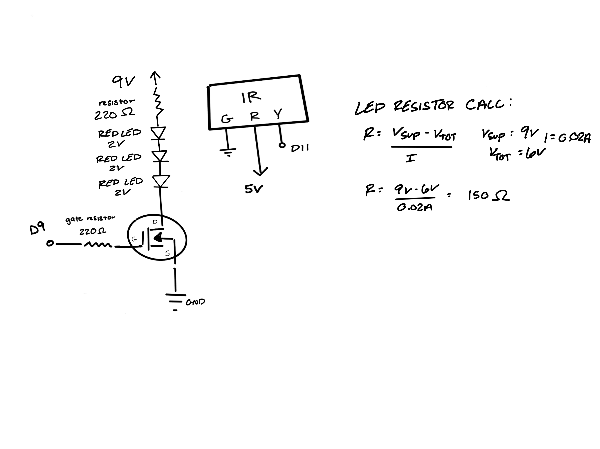
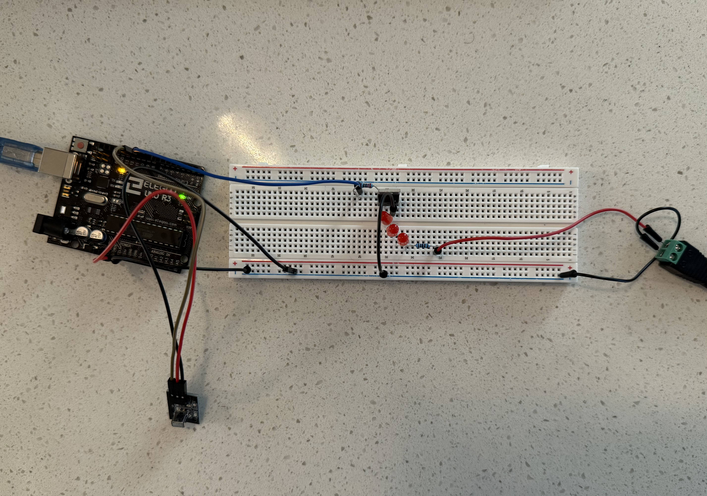
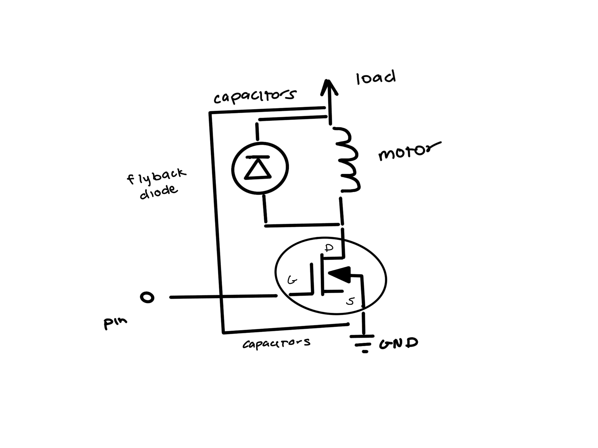

For my A5 circuit, I used a transistor to control an LED with PWM signals from an Arduino and an IR receiver, while the LED is powered separately by a 9V supply.

The schematic for this circuit shows how the components are connected. The transistor is used to control the power supplied to the LED load. A gate resistor is included to limit the current from the Arduino pin, and a series resistor is placed with the LED to limit the current through it. The IR receiver is connected to pin 11 for signal input, with its power and ground connected to the Arduino.

The physical circuit ensures that all components are properly connected as per the schematic.
#include //intialize IRremote library
#define IR_RECEIVE_PIN 11 //set IR receiver output pin
#define LED_GATE_PIN 9 //set LED conencted to transistor pin
int brightness = 128; //set beginning brightness
bool ledOn = true; //set LED state
void setup() {
Serial.begin(9600); //start serial communication
IrReceiver.begin(IR_RECEIVE_PIN); //start IR receiver
pinMode(LED_GATE_PIN, OUTPUT); //set transistor gate pin as OUTPUT
analogWrite(LED_GATE_PIN, brightness); //set initial LED brightness
Serial.println("IR-LED Ready"); //state readiness
}
void loop() {
if (IrReceiver.decode()) { //check IR receiver signla
unsigned long code = IrReceiver.decodedIRData.decodedRawData; //store the received IR code
Serial.println(code, HEX); //print IR code
switch (code) { //IR codes
case 0xBA45FF00: //power button
ledOn = !ledOn; //turn LED on/off
analogWrite(LED_GATE_PIN, ledOn ? brightness : 0); //apply PWM based on LED state
break;
case 0xF609FF00: //brightness up button
brightness = min(255, brightness + 25); //increase brightness
analogWrite(LED_GATE_PIN, brightness); //apply new brightness to transistor gate
break;
case 0xF807FF00: //brightness down button
brightness = max(0, brightness - 25); //decrease brightness
analogWrite(LED_GATE_PIN, brightness); //apply new brightness to transistor gate
break;
}
IrReceiver.resume(); //prepare IR receiver for next signal
}
}
This code uses the IRremote library to read signals from an IR remote. It controls the brightness of an LED connected via a transistor. The power button toggles the LED on and off, while the brightness up and down buttons adjust the brightness
1. The absolute maximum amount of current between pins 2 and 3 of a n-mosfet transistor is 37.2A per the datasheet.
2.

3.